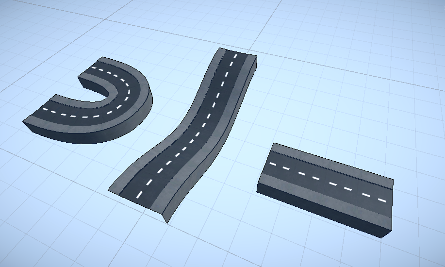
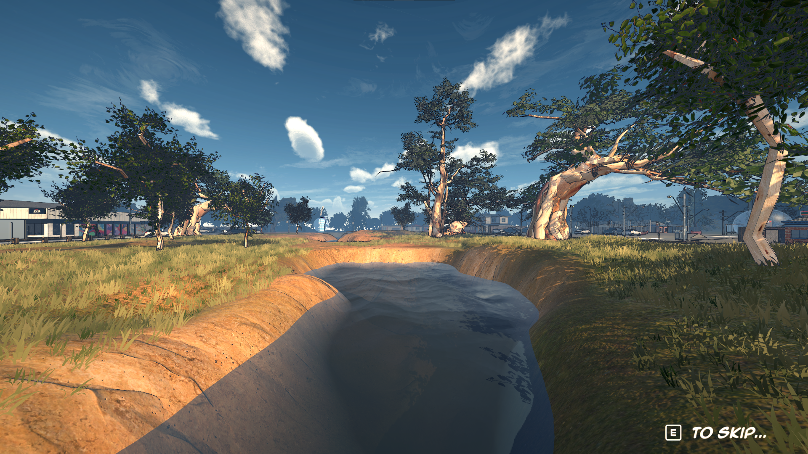
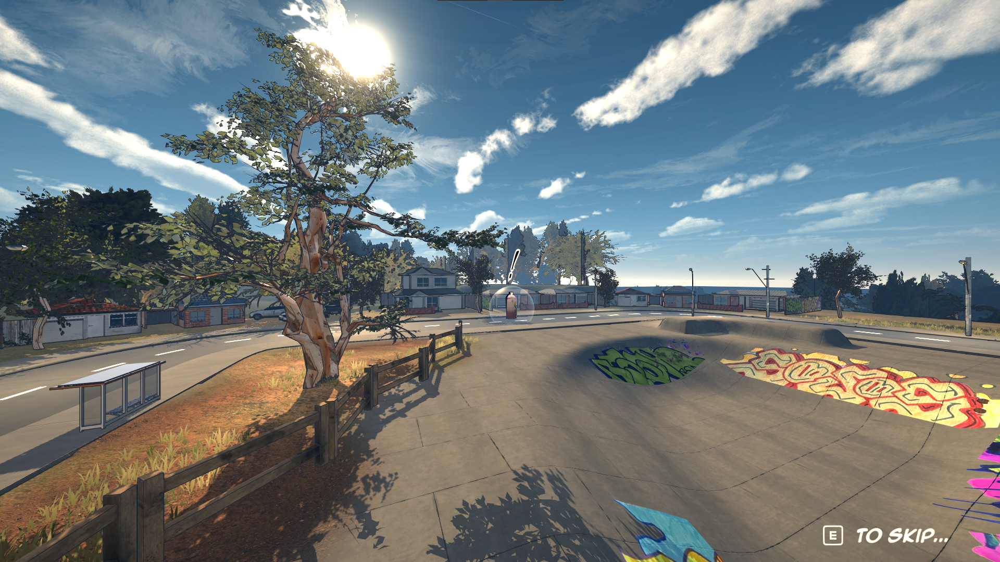
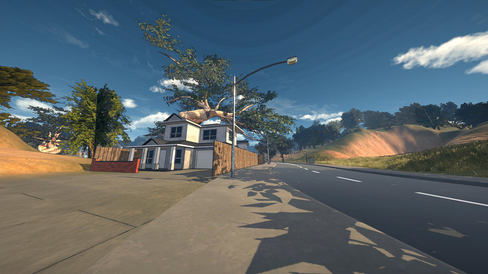
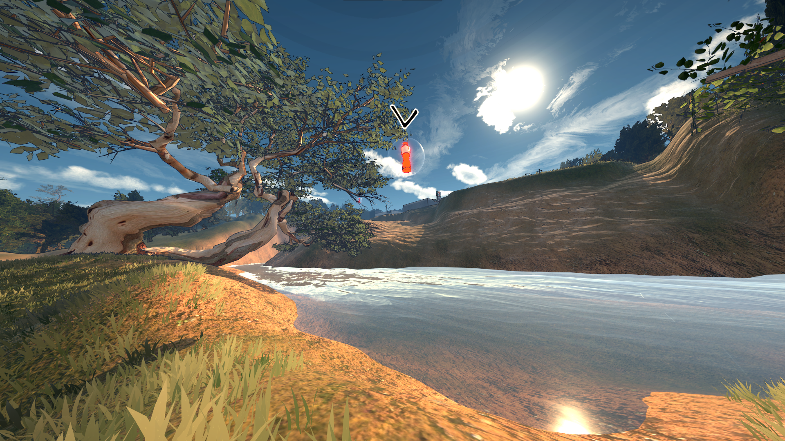
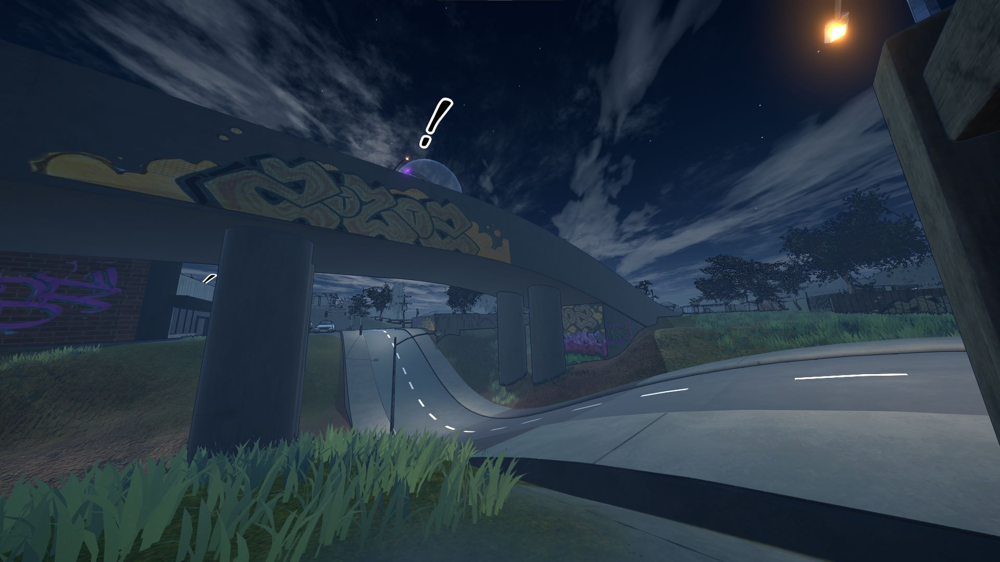
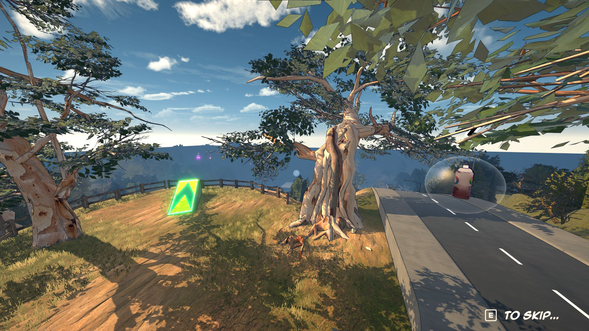

Dero Dazza’s Dirty Dash (2025)
Winner of RMIT’s Program Excellence Award
High-octane first-person speedrunner platformer. Play as the Australian eshay legend Dero Dazza, blasting through the outer suburbs of Melbourne. (Download it on itch.io)
Exhibited at the ACMI Audience Lab (2025) and RMIT Grad Show (2025).
- Role: Lead gameplay & level designer, lead programmer, SFX, UI and VFX designer.
- Team: 6 people
- Playtesting: 100+/day playthroughs at ACMI • 200+ plays at RMIT Grad Show
My Responsibilities
Here’s what I was responsible for during our 13-week development period:
- Designing mechanics (slide, mid-air slam, drift, dash, wall-run, trophy system)
- Gameplay programming (C#)
- GitHub repository management
- Level design support + environment composition
- UI/UX polish, shader/post tuning, sound design
- Team task management
- Playtests + analytics (heatmaps/graphs) and exhibition data collection
What I Shipped
- Implemented the full movement system (slide / slam / drift / dash / surface alignment) and tuned it for speedrunning.
- Built 4 Australian-style environments (placing buildings, trees, graffiti, signs, and sculpting terrain).
- Built a modular road tileset workflow to speed up level iteration.
- Developed an analytics pipeline (CSV logging → heatmaps/graphs) for playtest and exhibition insights.
- Created key UI flows and polish: level select, trophies, settings, responsive tutorial prompts by input device.
- Implemented adaptive shaders, post-processing, and VFX.
- Built speed-adaptive sound effects.
Target Audience
From the start, the target audience was competitive players who enjoy beating best times and mastering mechanics. Therefore, I designed systems that reward speed and precision. Because movement is the core focus, I kept the in-level gameplay loop simple to avoid overwhelming first-time players.
Spawn → Explore map and collect 3 items → Unlock end goal → Finish → Retry for PB + trophy
Movement Systems


Design challenges
- Problem: Maintain speed without losing control → Solution: tuned friction/air control + clear “commitment” windows for each mechanic.
- Problem: Downforce/surface alignment can cause motion sickness → Solution: camera smoothing, interpolation, and conservative rotation limits.
Rewarding Speed
To reward players for gaining speed, I added reactive speed lines, a subtle chromatic aberration + FOV boost, a speed-based pitch-changing wind sound, and trophies for beating levels under target times.
Level Design
In collaboration with our main level designer, we structured the game to introduce and test one movement mechanic per level. After extensive playtesting, we learned that at high speed, strong sightlines are essential. We used signage, varying road heights, intro cutscenes, and a minimap to keep players oriented.
Iteration
Early on, we had many competing mechanic ideas (including time changing based on speed). To keep scope realistic and the core loop readable, I trimmed features that didn’t directly support speedrunning clarity and focused on movement mastery.
For level iteration, playtests often revealed moments where players didn’t know where to go. A major breakthrough was switching from Unity’s ProBuilder (slow to iterate for our needs) to a snap-together road tileset. This also enabled smooth slopes, which complemented the surface alignment physics.
Exhibition Playtesting
Every time we ran playtests, new issues emerged—often related to beginner accessibility. Players would get lost or miss when to use a specific movement mechanic, so we continuously iterated on the levels.
Before the ACMI exhibition, I built a system that collected level completion time and player location data to identify where players were getting lost or losing large amounts of speed. It also helped reveal common routes and skill differences.
Graphs
This data was gathered from 100+ playthroughs, mostly from people who had never played the game before.
This suggests which levels could benefit from length adjustments. Our goal was for most first clears to be achievable in under a minute.
Surprisingly, L4D had the fastest completion time despite being the hardest. This may be because players were more comfortable with the controls by then, so more testing would be needed to confirm.
Average speed increases per level, which makes sense: each new mechanic expands the player’s options for building and maintaining speed.
Heatmaps (Level 1)
I wrote a script that samples the player’s X/Z position over time and saves it to a CSV. I then built a separate tool to interpret that data and generate top-down heatmaps.

This shows much higher route variation. Slower players attempted corner-cuts but often did so inefficiently, and spent more time in the central bowl/slope road area.

This shows much more consistency. The red/pink line highlights the single fastest route recorded.
Interestingly, it only includes one major skip over the bottom-right building—most of the optimal run stays on the road.

These are locations where players lost a lot of speed at once. This helped identify readability/collision issues where players assumed a path was clear but collided.
Polish / Settings
With limited time, I still wanted to push polish—especially UI. Inspired by Persona 5, I used angular layouts and two-tone text. I used More Mountains Feel to add responsive hover/click feedback. Finally, I implemented mouse+keyboard and controller support, including dynamically swapping tutorial prompts based on the current input device.


World Building
Aligning with our Melbourne-suburb theme, I was in charge of using the road pieces laid out by the main level designer and the models/textures provided by our artists to populate and dress the scenes.
Having lived my whole life in places like this, inspiration was close by—I often went on walks around my suburb taking reference photos. Our group also went on hikes for landscape inspiration.
Here are some screenshots from the levels that show off the environment work I did:
     